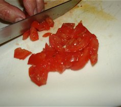
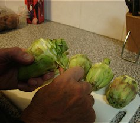
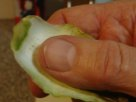
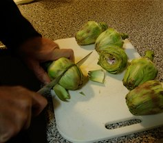
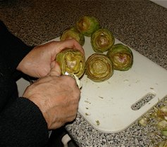
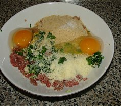
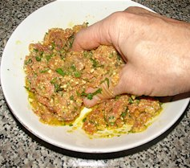
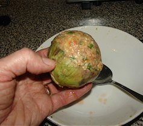
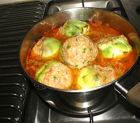

Carciofi con carne
Stuffed artichokes
as Mum called it Canciofoli ca carne
The hurdle for this dish is cultural. Even though most of the fibrous outside leaves have been removed, there are still some leaves that are quite fibrous and should not be eaten. However, they are still quite tasty so they are chewed for the flavour and then demurely spat out onto a side dish. This is a common type of dish which is eaten simply with some tasty crusty bread. There is some preparation involved but the flavour of the dish makes it all worthwhile.

Method
-

Remove the seeds from the ripe tomatoes and dice.
Slice the garlic and fry both the tomatoes and garlic in a generous layer of olive oil in a saucepan.
-

Mash the tomato/garlic mixture when the tomato is softened and then add water to cover the artichokes as they are placed after preparation. You can turn off the heat until all the artichokes are prepared. It is important that the artichokes go into the tomato/water base as they will go a dark colour after being cut during preparation if left exposed to the air.
-


The artichokes are prepared by taking off the outside leaves which are very fibrous. Peel each one off until the much lighter leaves are visible. Part of the crown comes off with every leaf and that part can be bitten off as it is very tasty eaten raw.
-

The second part of preparing the artichokes is to cut off the bottom part of the leaves to gain access to the fibrous heart of the artichoke.
-

The third part of preparing the artichokes is to remove the very fibrous small white leaves at the heart of the artichoke. By the end you should have the crown and the younger leaves remaining with a cavity ready for the meat filling.
-

Prepare the meat filling which is basically a meatball mixture (without the garlic and cracked pepper). The filling consists of minced lean meat, eggs, finely chopped parsley, breadcrumbs and parmesan cheese.
-

Combine all the ingredients thoroughly.
-

Spoon the mixture into the empty heart of the artichoke.
-

Place into the tomato based water and add a heaped teaspoon of salt. The amount of salt depends on personal taste. Rotate the artichokes as they cook, to spread the tomato flavour. Leave the lid off for simmering on a low heat while the artichokes cook. The colour of the leaves change to a dull green and the crowns of the artichoke should be soft. The sauce will reduce so more water might need to be added if the crowns are still hard.
To serve
I usually eat them with a fork and crusty bread. It is not really a “fork and knife” dish – most bowl type dishes are traditionally either a spoon only or fork only dish, but suit yourself. It is a very tasty dish and you can experiment with the filling quantities and the amount of salt.